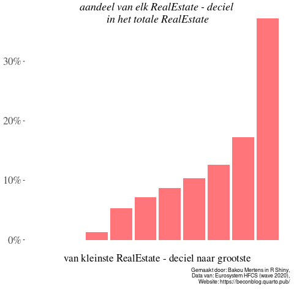
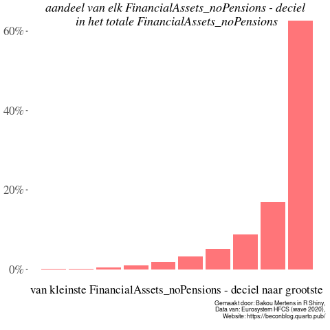
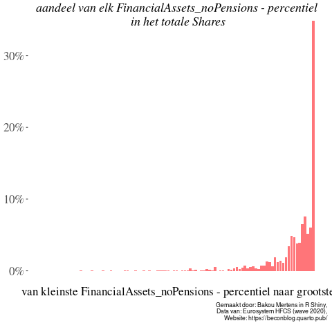
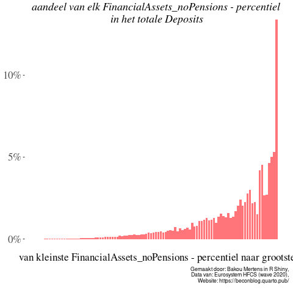
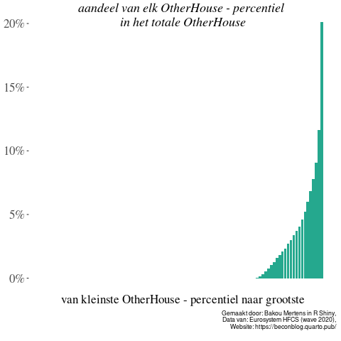
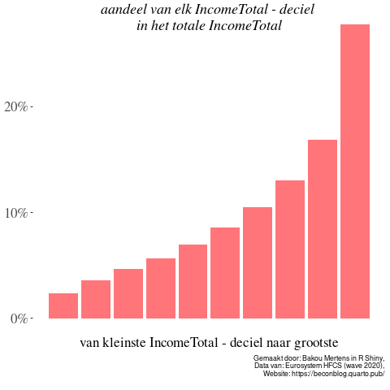
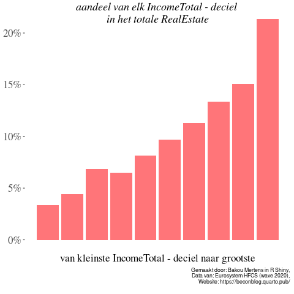
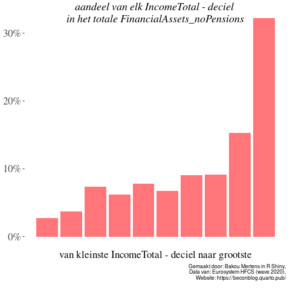

Wil je weten hoe het bezit van aandelen, spaargeld of tweede verblijven is verdeeld over de Belgische bevolking? Of eerder benieuwd naar welke inkomensgroep vooral dure auto’s bezit? Of ben je meer geïnteresseerd hoeveel vastgoedvermogen de rijkste Belgen gemiddeld bezitten? Je kan het allemaal te weten komen: visualiseer zelf de ongelijkheid in België aan de hand van deze online tool. Kies zelf uw variabele en rangschik de bevolking op basis van inkomen, vermogen of aandelenbezit. En hop, je krijgt een grafiek te zien gebaseerd op de nieuwste data van de HFCS-enquête voor België. Je kan de grafiek ook downloaden en delen om zo uw verontwaardiging over de staat van de ongelijkheid te verspreiden.
Geen goede cijfers in België
We hebben in België geen goede cijfers over ongelijkheid. Het maandelijkse magazine SamPol wijdde in januari een uiterst interessant nummer aan wat onderzoekers wel en niet weten over de ongelijkheid in België. Er is veel dat we niet weten, zo blijkt. De officiële cijfers over de inkomensongelijkheid zijn een grove een onderschatting van de reële ongelijkheid doordat de inkomsten uit kapitaal niet worden meegerekend. Officiële cijfers over vermogensongelijkheid hebben we al zeker niet aangezien onze politici weigeren een vermogenskadaster op te stellen, althans voor wie geen beroep moet doen op een sociale woning.
Nieuwste data uit bevraging door ECB
Hier brengen we jullie de nieuwste cijfers, vers van de pers, over de inkomens- en vermogensongelijkheid in België. De data komen van de recentste uitvoering van de Household Finance and Consumption Survey (HFCS). Deze enquête werd tussen juli 2020 en juni 2021 door de Nationale Bank afgenomen bij 2130 Belgen en peilt onder andere naar het vermogen en het inkomen van de respondent. De gegevens betreffen het inkomen of vermogen op het niveau van het huishouden, niet het individu. Wij trekken er alvast drie belangrijke lessen uit, maar roepen in de eerste plaats iedereen op om zelf de grafieken te produceren via deze eenvoudige online tool en deze verder te verspreiden.
Financieel vermogen is veel ongelijker verdeeld dan vastgoed.
Tweede verblijven zijn wel degelijk weggelegd voor een selecte groep aan de top.
Er is een hoge mate van overlap tussen de positie van een huishouden in de verdeling van inkomen, financieel vermogen en vastgoed.
Onderschatting van de realiteit
Bedenk hierbij dat de echt grote vissen door een enquête doorgaans niet worden bevraagd. De kans dat uit de 5 miljoen Belgische huishoudens geen van de 500 meest vermogende huishoudens geselecteerd werd voor de enquête is meer dan 80%. Deze heel erg kleine groep meest vermogenden is nochtans erg belangrijk voor de totale vermogensverdeling. Stel bijvoorbeeld dat deze bevraging toevallig de famillies Wittouck, Boël of Frère had behelsd, dan beschikte één huishouden over wel honderd keer meer financieel vermogen dan alle andere huishoudens opgeteld. Deze cijfers geven dus een redelijk conservatief beeld van de reële vermogensongelijkheid in België. Aangezien erg vermogenden meestal ook genieten hoge kapitaalinkomens, is ook de inkomensverdeling in werkelijkheid allicht ongelijker dan wat blijkt uit deze cijfers.
Financiëel kapitaal versus vastgoed
Belgische vermogensongelijkheid wordt gekenmerkt door een redelijk – niet in de ethische, maar in de comparatieve zin - gelijke verdeling van vastgoed. Ongeveer 70% van de huishoudens bezit namelijk een eigen woning, wat in internationaal perspectief zeer hoog is. De zogenaamde baksteen in de maag zorgt voor een vermogensmiddenklasse die in veel andere landen onbestaande is. Toch blijft de vermogensongelijkheid in België aanzienlijk doordat financieel vermogen extreem ongelijk verdeeld is. Zo heeft de rijkste 10% van de Belgische bevolking iets minder dan 60% van de totale financiële rijkdom in handen. Opvallend is dat die groep ongeveer 40% bezit van al het spaargeld, 65% van al het geld belegd in investeringsfondsen en bijn 80% van alle aandelenwaarde. Dus wanneer de Centrale Bank bericht over de vele honderden miljarden aan spaargeld op Belgische bankrekeningen, bedenk dan dat de (qua spaargeld) 1% rijkste huishoudens zo’n 20% van het totale bedrag in handen hebben. Het zijn dus niet zozeer “de Belgen” in hun geheel die slapen op een berg geld, maar eerder een heel kleine groep rijken.


In absolute cijfers bezit de top 10% meest vermogenden gemiddeld 800.000 euro aan financieel vermogen, 1.200.000 euro aan vastgoed en nog eens 80.000 euro aan opgebouwde pensioenen (via pensioensparen). Voor de rijkste 1% gaat dit gemiddeld over 3 miljoen financieel vermogen, 2 miljoen aan vastgoed en nog eens 350.000 euro aan pensioenfondsen. Figure 2 geeft weer hoe ongelijk aandelen en spaargeld verdeeld zijn over percentielen van de bevolking.
Opvallend is wel dat deze groep, de rijkste 10%, “slechts” 35% van het totale vastgoedvermogen in handen heeft. Vastgoed is in België dus wel degelijk veel gelijker verdeeld over de bevolking dan financieel vermogen. Ook wanneer je de bevolking rangschikt op basis van de waarde van het totale vastgoed, zoals afgebeeld in Figure 1, blijft de verdeling van vastgoed veel minder extreem dan die van financieel vermogen.


De Kleine spaarder met zijn tweedeverblijf?
Vastgoed is dus redelijk egalitair verdeeld over de bevolking, al mogen we de groep huurders niet uit het oog verliezen. Het gaat om ongeveer 30% van de Belgische bevolking die tot tot de meest kwetsbaren behoren, aangezien ze geen eigen woning hebben om op terug te vallen. Toch is het beeld dat de Bouchez’ van deze wereld graag schetsen, dat van de “kleine spaarder” met een tweede verblijf, niet in overeenstemming met de werkelijkheid. Slechts 22% van de Belgische huishoudens bezit überhaupt (een deel van) een tweede verblijf, en 80% van de totale waarde van tweede verblijven is in handen van 10% van de bevolking. Deze huishoudens zitten bovendien stelselmatig in het hoogste deciel van zowel inkomen, financieel vermogen als vastgoedvermogen. Wie over meer vastgoed beschikt dan enkel de eigen woning, verhuurt deze vaak aan zij die niet over een eigen woning beschikken. Huurgeld stroomt dus van de meest kwetsbaren naar de groep huishoudens helemaal aan de top van de inkomens- en vermogensverdeling. De scherpe stijging (en automatische indexering) van huurgelden van de laatste jaren is in feite een herverdeling van de armsten naar de rijksten, waarbij de top 5% van de huishoudens met een tweede verblijf jaarlijks gemiddeld 30.000 euro huurinkomen verwerven. Inkomen dat in België daarenboven onbelast blijft. Maatregelen die tweede verblijven of reële huurinkomsten trachten te belasten treffen dus voor het overgrote deel niet de “kleine spaarder”, maar wel degelijk de top van de Belgische inkomens- en vermogensverdeling.

Hoge mate van overlap aan de top
Een andere belangrijke vraag is in welke mate je positie in de inkomensverdeling samenloopt met je positie in de verdeling van (financieel) vermogen. Het lijkt evident dat de verdelingen grotendeels samenvallen, maar dat is het niet per se. Zo kan een jonge werkne(e)m(st)er met een relatief laag inkomen een grote som geld of vastgoed hebben geërfd, of kan een oudere gepensioneerde beschikken over een appartementje aan zee en een mooie aandelenportefeuille. Beiden zouden een redelijk lage positie innemen in de inkomensverdeling, terwijl ze op vlak van vermogen misschien wel in de hoogste decielen thuis horen. Dergelijke profielen zullen vast en zeker bestaan, maar de vraag is hoe uitzonderlijk ze zijn en in welke mate ze het totaalplaatje domineren. Om dit zelf te achterhalen moet je de variabele op de x-as constant houden, wat betekent dat je de bevolking verdeeld over hokjes (decielen of percentielen) op basis van één welbepaalde variabele, bijvoorbeeld het totale inkomen Wanneer je vervolgens de verdeling van totaal vermogen uiteenzet, kan je nagaan of de functie stijgend verloopt. Zo ja, dan wil dat zeggen dat huishoudens met meer inkomen (meer naar rechts op de x-as) ook een hoger aandeel van het Belgische vermogen bezitten. Dat blijkt inderdaad het geval te zijn.
  
Verdeling over decielen van het inkomen: overlap aan de top
Kanttekeningen en conclusie
Ondanks het gebrek aan effectieve data over ongelijkheid in België, krijgen we aan de hand van enquêtes zoals deze regelmatig een beeld van hoe deze er ongeveer uitziet. Dat beeld correspondeert helaas lang niet perfect met de realiteit. Bij relatief kleine enquêtes als deze komt er altijd een grote mate van onzekerheid aan te pas. Bovendien is de kans op een onderschatting van het vermogen en het inkomen van de rijksten erg groot, Ondanks de uitgesproken beperkingen, geven deze data geven dus wel een goed idee van hoe inkomen, vermogen en hun componenten in België verdeeld zijn. Dat beeld is al bij al vrij genuanceerd en complex. Het kan niet zomaar gevat worden door één grafiek, aangezien het van belang is welke variabele je gebruikt om huishoudens te ordenen. Ook al is er een hoge mate van overlap aan de top van de inkomens- en vermogensdistributie, om een goed beeld te krijgen van de verschillende vormen van ongelijkheid in België moeten verschillende grafieken naast elkaar worden gelegd. Daarvoor is deze tool uitermate geschikt.
We zullen in andere blogs dieper ingaan op deze data, ze eventueel vergelijken met de vorige twee golven (2014 en 2017) en ze gebruiken om argumenten kracht bij te zetten, maar laten de lezer nu zelf aan de slag gaan. Visualiseer zelf de verschillende vormen van ongelijkheid in België, download de gewenste grafieken en deel ze om zo de kennis over de Belgische ongelijkheid te verspreiden. Wanneer Bouchez of Lachaert dan nog eens claimen om in het belang te handelen van de kleine spaarder met zijn dikke aandelenportefeuille of vele huurinkomsten, kun je die beweringen gemakkelijk counteren met data en grafieken. De data geven duidelijk aan dat, hoewel kleine beleggers wel bestaan, financieel vermogen toch vooral geconcentreerd zit bij een kleine groep heel vermogenden. Elke maatregel die vermogen ten goede komt, heeft dus ook in België heel veel negatieve consequenties wat ongelijkheid betreft.
Vragen en feedback
Heb je vragen of feedback, aarzel dan niet om ons te contacteren. Wij staan open voor kritiek, gaan graag in discussie en beantwoorden graag eventuele onduidelijkheden! Wil je graag zelf iets schrijven, contacteer ons!